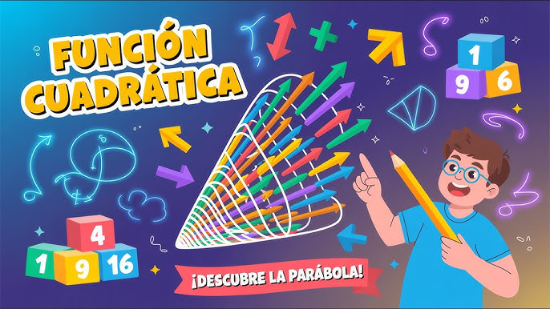
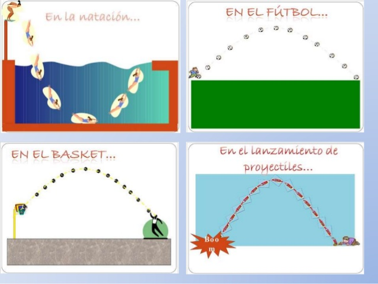
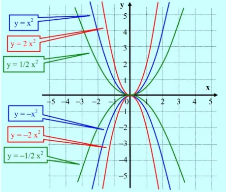
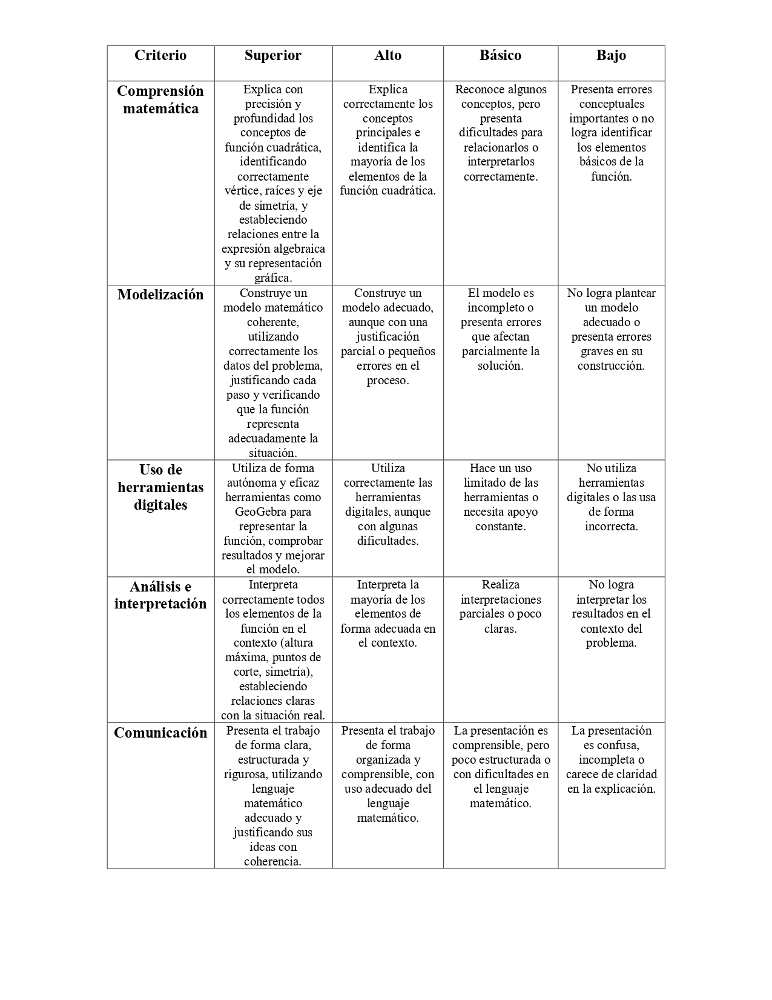
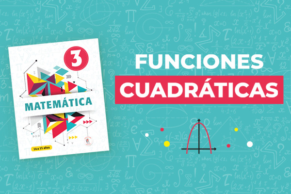

<!DOCTYPE html PUBLIC "-//W3C//DTD HTML 4.01 Transitional//EN">
<html>
  <head>
    <meta http-equiv="Content-Type" content="text/html; charset=UTF-8" />
    <meta name="author" content="Juan Sebastian Gaona Paredes" />
    <meta name="description" content="Trayectorias con funciones cuadráticas" />
    <meta name="keywords" content="webquest, funciones, trayectoria" />
    <style type="text/css" media="all">
      body,td {font-family: Arial; font-size:100%}
    </style>
    <style type="text/css" media="print">
      body,p,td,a {color: black; background-color: white;}
    </style>
    <style
  body {
    background-image: url('FONDO.jpg');
    background-repeat: repeat;  
    background-size: auto;
    background-position: center;
  }
      body {
  margin: 0;
  padding: 0;
}

table {
  background-color: rgba(255,255,255,0.95);
  margin: auto;           /* centra TODO */
}

.main-container {
  width: 90%;
  margin: auto;
}
</style>
    <title>Trayectorias con funciones cuadráticas</title>
  </head>

  <body
    text="#000000"
    link="#000000"
    vlink="#000000"
  >
    <div align="center">
      <small>
        <a href="#introduccion">Introducción</a>
        |
        <a href="#tareas">Tareas</a>
        |
        <a href="#proceso">Proceso</a>
        |
        <a href="#recursos">Recursos</a>
        |
        <a href="#evaluacion">Evaluación</a>
        |
        <a href="#conclusion">Conclusión</a>
        |
        <a href="#creditos">Créditos</a>
      </small>
    </div>

    <a name="arriba"></a>
    <div align="center">
      <h2>Trayectorias con funciones cuadráticas</h2>
      
    </div>
    <table align="center" summary="" width="90%">
      <tbody>
        <tr>
          <td width="50%">
            <p>Autor: Juan Sebastian Gaona Paredes</p>
            <p>
              E-mail:
              <a href="mailto:juansegaonap@gmail.com">juansegaonap@gmail.com</a>
            </p>
          </td>
          <td width="50%">
            <p>Área: Matemáticas</p>
            <p>Nivel: 4º de la ESO</p>
          </td>
        </tr>
      </tbody>
    </table>
    <br /><br />
    <table width="100%" border="0" cellpadding="10" align="center" summary="">
      <tbody>
        <tr>
          <td width="20%" valign="top" align="right">
            <a name="introduccion"></a>INTRODUCCIÓN
          </td>
          <td width="80%">
            <div align="center">
              
            </div>
            <p>
              ¿Alguna vez te has preguntado cómo se diseñan las curvas de una
              montaña rusa o por qué siguen siempre una forma tan perfecta?
              Detrás de esas trayectorias hay más Matemáticas de las que
              imaginas… y entenderlas puede marcar la diferencia entre un diseño
              seguro y uno peligroso.<br /><br /><br />
              Hoy vas a explorar las Matemáticas que permiten modelar estas
              curvas: <i>las funciones cuadráticas.</i> Analizarás gráficas,
              interpretarás sus elementos y construirás tu propio modelo para
              resolver una situación real.<br /><br />
              No te preocupes si al principio parece complejo: aquí irás paso a
              paso, con tareas y recursos que te ayudarán a descubrirlo.
              Encontrarás también cómo se evaluará tu trabajo y qué habrás
              aprendido al finalizar.<br /><br />
              ¡Adelante! Dirígete a la sección "Tareas" para comenzar.
            </p>
          </td>
        </tr>
        <tr>
          <td width="20%" valign="top" align="right">
            <a name="tareas"></a>TAREAS
          </td>
          <td width="80%">
            <div align="center">
              
            </div>
            <p>
              <b>Diseñando la trayectoria perfecta.</b><br /><br />

              En este apartado encontrarás cuatro tareas organizadas en
              distintos momentos: Exploramos el problema (momento 1), Planteamos
              el modelo (momento 2), Buscamos y comprendemos la información
              (momento 3) y Diseñamos y analizamos la trayectoria (momento
              4).<br /><br />

              Se recomienda leer con atención cada uno de los momentos antes de
              comenzar. Después, puedes dirigirte a la sección de “Proceso y
              recursos”, donde encontrarás la información necesaria para
              resolver las tareas y apoyar tu trabajo.<br /><br />
              <b>Momento 1: Exploramos el problema</b> En este primer
              momento, te acercarás a la situación que vas a resolver. Imagina
              la trayectoria de una montaña rusa: ¿qué forma tiene?, ¿qué
              elementos destacarías?, ¿cómo podrías describirla matemáticamente?
              <b>Actividades: Observa diferentes imágenes o gráficas de
                trayectorias (puedes apoyarte en los recursos). Describe con tus
                propias palabras:</b>
              ¿Qué forma tienen estas curvas? ¿Dónde crees que se encuentra el
              punto más alto? ¿Cómo identificarías los puntos donde la
              trayectoria toca el suelo? ¿Has visto situaciones similares en la
              vida real donde aparezcan este tipo de curvas? Menciona al menos
              dos ejemplos.<br /><br />

              <b>Momento 2: Planteamos el modelo</b><br /><br />
              En este momento comenzarás a dar forma matemática a tus ideas
              iniciales, proponiendo cómo representar la trayectoria de la
              montaña rusa mediante una función. <br /><br />
              <b>Actividades: A partir de lo observado en el momento anterior,
                responde:</b>
              <br /><br />

              1. ¿Qué características debe tener la función que modele la
              trayectoria? <br />
              2. ¿Qué información necesitas conocer para construirla? Considera
              que la trayectoria pasa por tres puntos (inicio, punto más alto y
              final):<br />
              a) ¿Cómo podrías usar esos puntos para determinar una función?<br />
              b) ¿Qué forma de la función cuadrática te parece más adecuada
              (general, factorizada o canónica)? Justifica tu elección. <br />
              3. Plantea una hipótesis:<br />
              a) Escribe una posible expresión algebraica que represente la
              trayectoria (aunque no sea exacta).<br />
              b) Explica por qué crees que esa expresión puede funcionar.<br /><br /><br />

              <b>Momento 3: Buscamos y comprendemos la información</b><br /><br />
              En este momento consultarás diferentes recursos para fortalecer
              tus ideas y avanzar en la construcción del modelo matemático.<br />
              <b>Actividades:</b><br />
              1. Revisa los recursos proporcionados en la sección “Recursos”.<br />
              2. Identifica y toma nota de:<br />
              a) ¿Qué es una función cuadrática?<br />
              b) ¿Cuáles son sus formas de expresión?<br />
              c) ¿Cómo se determinan sus elementos (vértice, raíces, eje de
              simetría)?<br />
              3. Analiza ejemplos de funciones cuadráticas: <br />
              a) ¿Cómo cambia la gráfica según los valores de la función? <br />
              b) ¿Qué relación encuentras entre la expresión algebraica y su
              representación gráfica?<br />
              4. Contrasta tu hipótesis del momento anterior:<br />
              a) ¿Es adecuada tu propuesta inicial?<br />
              b) ¿Qué cambios necesitas hacer?<br /><br /><br /><br />

              <b>Momento 4: Diseñamos y analizamos la trayectoria</b><br /><br />
              En este último momento pondrás en práctica lo aprendido para
              construir y validar tu modelo matemático.<br />
              <b>Actividades:</b><br />
              1. Determina la función cuadrática que modela la trayectoria:<br />
              a) Utiliza tres puntos dados (inicio, punto máximo y final).<br />
              b) Plantea y resuelve el sistema necesario.<br />
              2. Representa la función: a) Grafica la trayectoria utilizando una
              herramienta digital (por ejemplo, GeoGebra). <br />
              b) Verifica que la curva pase por los puntos indicados. <br />
              3. Analiza el modelo obtenido: <br />
              a) Identifica el vértice, las raíces y el eje de simetría.<br />
              b) Explica qué representa cada elemento en el contexto de la
              montaña rusa.<br />
              4. Reflexiona sobre el resultado:<br />
              a) ¿Tu modelo es coherente con la situación planteada?<br />
              b) ¿Qué mejorarías en tu diseño?<br />
            </p>
          </td>
        </tr>
        <tr>
          <td width="20%" valign="top" align="right">
            <a name="proceso"></a>PROCESO
          </td>
          <td width="80%">
            <div align="center">
              
            </div>
            <p>
              Para desarrollar esta actividad, trabajarás en equipo y seguirás
              una serie de pasos que te ayudarán a avanzar de forma
              organizada:<br /><br />
              <b>Paso 1: Comprender el problema</b><br />
              Lee la introducción y el
              <b>Momento 1: Exploramos el problema.</b> Observa las trayectorias
              y reflexiona sobre sus características.<br /><br />
              <b>Paso 2: Proponer ideas</b><br />
              Continúa con el <b>Momento 2: Planteamos el modelo.</b> Formula
              tus primeras hipótesis sobre cómo representar la trayectoria
              mediante una función.<br /><br />
              <b>Paso 3: Investigar y aprender</b><br />
              Dirígete al
              <b>Momento 3: Buscamos y comprendemos la información.</b> Consulta
              los recursos disponibles para reforzar tus conocimientos y mejorar
              tus ideas iniciales.<br /><br />
              <b>Paso 4: Aplicar y construir</b><br />
              Desarrolla el
              <b>Momento 4: Diseñamos y analizamos la trayectoria.</b> Construye
              el modelo matemático, represéntalo y analiza sus resultados.<br /><br />
              <b>Paso 5: Elaborar el producto final</b><br /><br />
              Organiza tu trabajo en una presentación digital (diapositivas,
              vídeo o póster), donde expliques: 1. El proceso seguido<br />
              2. El modelo matemático obtenido<br />
              3. La interpretación de los resultados<br />
            </p>
          </td>
        </tr>
        <tr>
          <td width="20%" valign="top" align="right">
            <a name="recursos"></a>RECURSOS
          </td>
          <td width="80%">
            <div align="center">
              
            </div>
            <p>
              <b>Momento 1: Exploramos el problema</b><br />
              En este momento inicial, los recursos te ayudarán a observar y
              reconocer la forma de las trayectorias en distintos contextos.<br /><br />
              En este momento inicial, los recursos te ayudarán a observar
              situaciones reales donde aparecen trayectorias curvas y a
              reconocer sus principales características.<br />
              Para visualizar mejor estas situaciones y comprender cómo se
              presentan en la realidad, observa el siguiente video:<br />
              https://www.youtube.com/watch?v=7DTJ4sscY54<br />
              Además, puedes apoyarte en la siguiente presentación para
              identificar ejemplos y aplicaciones de las funciones
              cuadráticas:<br />
              https://es.slideshare.net/slideshow/funciones-cuadrticas-y-sus-aplicaciones/73066668<br />
              También puedes utilizar la herramienta GeoGebra para explorar
              distintas gráficas y reconocer sus formas:<br />
              https://www.geogebra.org/classic?lang=es<br /><br />

              <b>Momento 2: Planteamos el modelo</b><br />
              En este momento comenzarás a dar forma matemática a tus ideas
              iniciales, apoyándote en recursos que te ayudarán a comprender las
              características de las funciones cuadráticas.<br />
              Para conocer los elementos básicos y la forma de este tipo de
              funciones, revisa el siguiente recurso:<br />
              https://portalacademico.cch.unam.mx/matematicas2/estudio-funcion-cuadratica/introduccion
              <br />
              Además, puedes complementar tu comprensión con el siguiente video
              explicativo:<br />
              https://www.youtube.com/watch?v=svqAxfMPw7Q <br />

              <b>
                Momento 3: Buscamos y comprendemos la información</b><br />
              En este momento profundizarás en los conceptos necesarios para
              comprender mejor las funciones cuadráticas y mejorar el modelo que
              has planteado.<br />
              Para ampliar la información y reforzar tus conocimientos, consulta
              el siguiente recurso:<br />
              https://openstax.org/books/prec%C3%A1lculo-2ed/pages/3-2-funciones-cuadraticas

              <b>Momento 4: Diseñamos y analizamos la trayectoria</b><br />
              En este momento pondrás en práctica lo aprendido para construir,
              representar y analizar tu modelo matemático.<br />
              Para apoyarte en la resolución y representación de la función
              cuadrática, revisa el siguiente video:<br />
              https://www.youtube.com/watch?v=KGRRgl9A3zE
            </p>
            <small>YouTube -
              <a href="https://www.youtube.com/watch?v=7DTJ4sscY54"
                >https://www.youtube.com/watch?v=7DTJ4sscY54</a></small><br />
            <small>Google -
              <a
                href="https://es.slideshare.net/slideshow/funciones-cuadrticas-y-sus-aplicaciones/73066668"
                >https://es.slideshare.net/slideshow/funciones-cuadrticas-y-sus-aplicaciones/73066668</a></small><br />
            <small>GeoGebra -
              <a href="https://www.geogebra.org/classic?lang=es"
                >https://www.geogebra.org/classic?lang=es</a></small><br />
            <small>Google -
              <a
                href="https://portalacademico.cch.unam.mx/matematicas2/estudio-funcion-cuadratica/introduccion"
                >https://portalacademico.cch.unam.mx/matematicas2/estudio-funcion-cuadratica/introduccion</a></small><br />
            <small>YouTube -
              <a href="https://www.youtube.com/watch?v=svqAxfMPw7Q"
                >https://www.youtube.com/watch?v=svqAxfMPw7Q</a></small><br />
            <small>Google -
              <a
                href="https://openstax.org/books/prec%C3%A1lculo-2ed/pages/3-2-funciones-cuadraticas"
                >https://openstax.org/books/prec%C3%A1lculo-2ed/pages/3-2-funciones-cuadraticas</a></small><br />
            <small>YouTube -
              <a href="https://www.youtube.com/watch?v=KGRRgl9A3zE"
                >https://www.youtube.com/watch?v=KGRRgl9A3zE</a></small><br />
          </td>
        </tr>
        <tr>
          <td width="20%" valign="top" align="right">
            <a name="evaluacion"></a>EVALUACIÓN
          </td>
          <td width="80%">
            <div align="center">
              
            </div>
            <p>
              En esta sección podrás consultar los criterios de evaluación para tu tarea. Se valorará la precisión del modelo, la claridad en la explicación y el uso correcto de las herramientas digitales.
            </p>
          </td>
        </tr>
        <tr>
          <td width="20%" valign="top" align="right">
            <a name="conclusion"></a>CONCLUSIÓN
          </td>
          <td width="80%">
            <p>
              Después de haber desarrollado esta actividad, llegamos a varias
              conclusiones, todas ellas fundamentales para comprender el papel
              de las Matemáticas en contextos reales:<br /><br />

              <b>Las funciones cuadráticas permiten modelar situaciones reales
                de manera precisa.</b>
              A través del análisis de trayectorias como la de una montaña rusa,
              los estudiantes comprendieron que las funciones cuadráticas no son
              solo expresiones algebraicas, sino herramientas útiles para
              representar y describir fenómenos del mundo real.<br /><br />

              <b>El conocimiento matemático fortalece el pensamiento crítico y
                la capacidad de modelización.</b>
              Al interpretar gráficas, identificar elementos como el vértice o
              las raíces y construir modelos a partir de datos, los estudiantes
              desarrollaron habilidades para analizar situaciones, formular
              hipótesis y tomar decisiones fundamentadas.<br /><br />

              <b>El uso de herramientas digitales facilita la comprensión y
                validación de los modelos matemáticos.</b>
              La utilización de aplicaciones como GeoGebra permitió visualizar
              las funciones, comprobar resultados y ajustar los modelos,
              favoreciendo un aprendizaje más dinámico y significativo.<br /><br />

              <b>La exploración, la formulación de hipótesis y la práctica
                favorecen un aprendizaje significativo.</b>
              El proceso seguido, desde la observación inicial hasta la
              construcción y análisis del modelo, permitió integrar los
              conceptos matemáticos con una situación concreta, reforzando la
              comprensión y la aplicación de las Matemáticas en contextos
              reales.<br /><br />
            </p>
          </td>
        </tr>
        <tr>
          <td width="20%" valign="top" align="right">
            <a name="creditos"></a>CRÉDITOS
          </td>
          <td width="80%">
            <div align="center">
              
            </div>
            <p>
              Esta WebQuest ha sido elaborada para: El curso Nuevas tecnologías
              en la enseñanza de las Matemáticas del Máster Universitario en
              Didáctica de las Matemáticas en Educación Secundaria y
              Bachillerato.<br /><br />

              A todas las personas que tienen la generosidad de poner su trabajo
              a disposición del resto, y en particular a los que aparecen
              citados en los recursos.<br /><br />

              Cuarto A (2018, 10, octubre). "Funciones cuadráticas en la vida
              cotidiana" [Video]. YouTube.
              https://www.youtube.com/watch?v=7DTJ4sscY54 <br /><br />

              Ticmas Educación (2020, 27, agosto). "FUNCIÓN CUADRÁTICA:
              Explicación Completa y Cómo Graficarla" [Video]. YouTube.
              https://www.youtube.com/watch?v=svqAxfMPw7Q <br /><br />

              TecnoMáticas (2020, 11, junio). "Graficar una FUNCION CUADRATICA
              en GEOGEBRA" [Video]. YouTube.
              https://www.youtube.com/watch?v=KGRRgl9A3zE <br /><br />

              Universidad Nacional Autónoma de México. (s.f.). Introducción al
              estudio de la función cuadrática. Recuperado de:
              https://portalacademico.cch.unam.mx/matematicas2/estudio-funcion-cuadratica/introduccion
              <br /><br />

              OpenStax. (s.f.). Funciones cuadraticas. Recuperado de:
              https://openstax.org/books/prec%C3%A1lculo-2ed/pages/3-2-funciones-cuadraticas
              <br /><br />

              Mariela Gonzalez (s.f.). Funciones cuadráticas y sus aplicaciones.
              SlideShare. Recuperado de:
              https://es.slideshare.net/slideshow/funciones-cuadrticas-y-sus-aplicaciones/73066668
              <br /><br />

              <b>WebQuest hecha por:<br /></b>
              <b>Juan Sebastian Gaona Paredes<br /></b>
              <b>Instructor de Matemáticas del SENA CDATH Y Estudiante de Máster
                en Didáctica de las Matemáticas en Educación Secundaria y
                Bachillerato</b>
            </p>
          </td>
        </tr>
      </tbody>
    </table>
    <div align="center">
      <br /><small
        ><a href="javascript:window.print()">Imprimir</a> -
        <a href="#arriba">Arriba</a></small
      ><br />
      <br /><small>
        (Página creada con 1,2,3 Tu WebQuest -
        <a href="http://www.aula21.net/">http://www.aula21.net/</a>)
      </small>
    </div>
    <br />
  </body>
</html>
